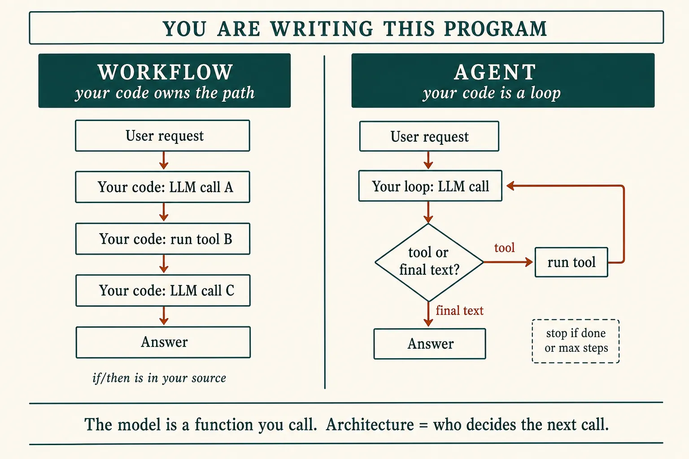
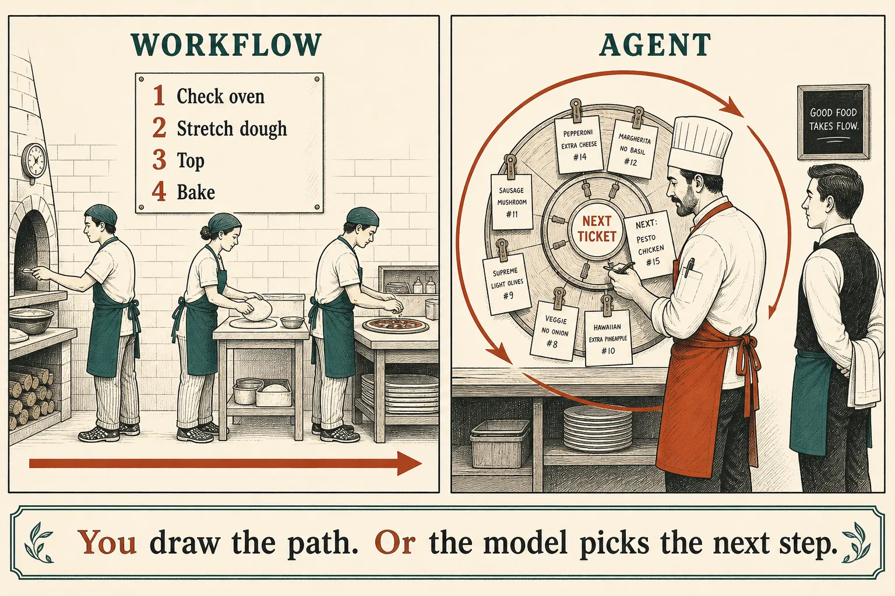
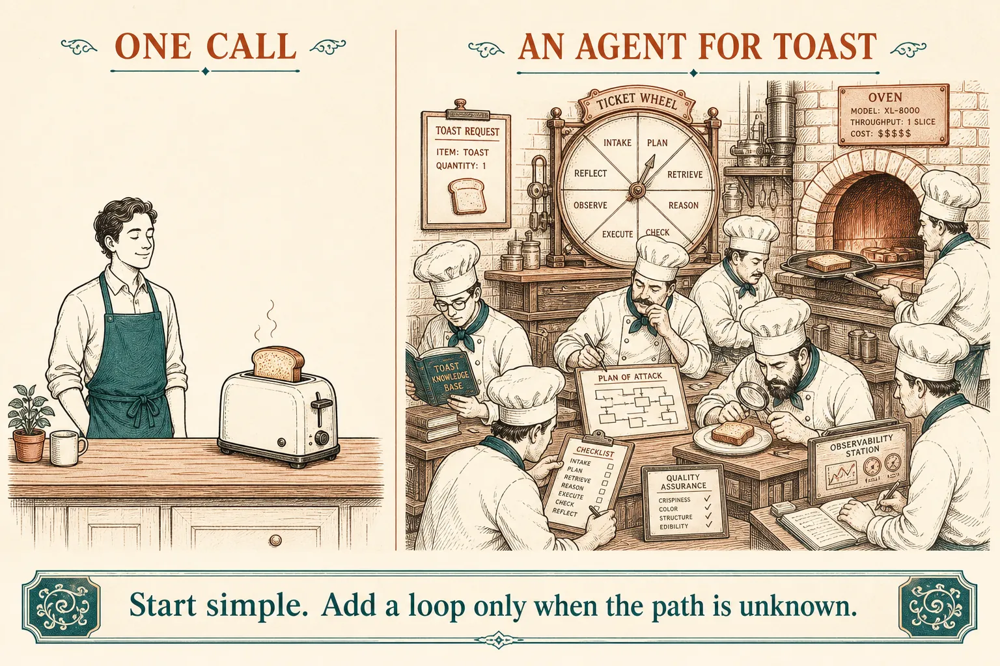
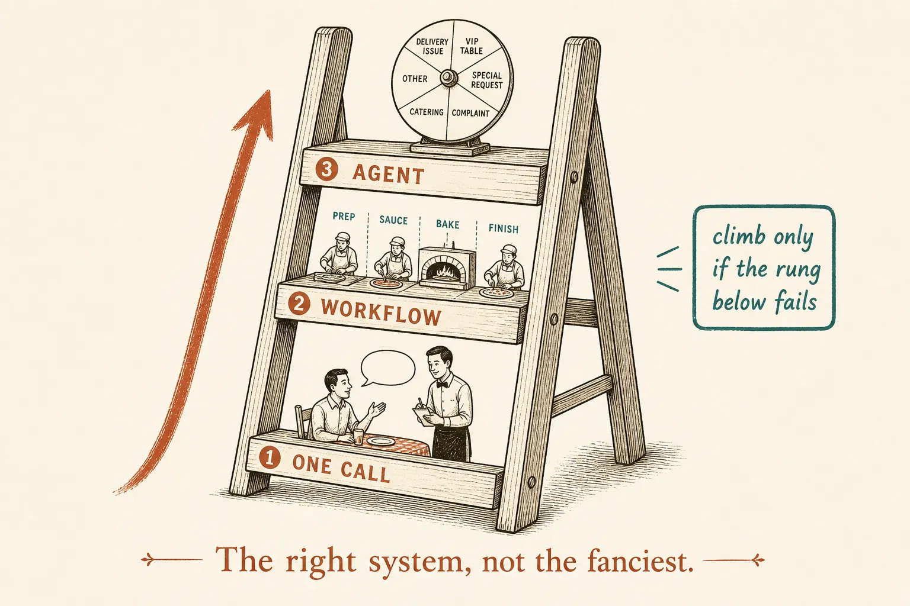

Architecture
Two ways to build the program
This lesson is not a ChatGPT feature, and it is not a product named “agent workflow.” It is the first real design choice you make when you write software that calls an LLM: does your code already know the steps, or is your code a loop that lets the model pick the next tool?
What this is. Architecture for an app you ship — an invoice bot, a support bot, a coding agent at work. You are writing the program. The model is a function you call (lesson 0003). Tools are slips your code runs (lesson 0005).
What this is not. Training a model. A vendor menu item. “Agent workflow” as one mashed-together name — Anthropic keeps the two words apart on purpose. The runtime around the loop is the harness — lesson 0007.
- 1 · One callYour program: messages in, text out. Often enough.
- 2 · WorkflowYour program already lists the steps. Control flow is in source.
- 3 · AgentYour program is a while-loop. The model chooses the next tool until stop.
“Building your own agent” means writing that loop (later: wrapping it in a harness). A workflow is also something you build — it is just more prescribed.
Who owns control flow?
Anthropic’s definitions, used as the field’s split: a workflow orchestrates LLMs and tools through predefined code paths. An agent is a system where the LLM dynamically directs its own process and tool use. They call the pair agentic systems. Building effective agents

Same tools as lesson 0005. Architecture = who decides the next call.
The two programs · pseudocode
# WORKFLOW — you already know the steps
a = llm("extract the order fields")
b = check_oven() # your code always does this next
c = llm("write the ticket", a, b)
return c
# AGENT — you do not know the steps
while steps < MAX:
action = llm(messages, tools) # model: tool call or final text?
if action is text:
return action # stop
result = run(action) # your code still runs the tool
messages.append(result) # paste back into RAM, loop
What this shows. In both programs you are the author. In a workflow the if/then is in your source. In an agent the if/then of “which tool next?” is inside the model; your source is the loop, the tool runner, and the stop. That is the whole architectural difference.
The muddy phrase “agent workflow”
People say it. Treat it as marketing fog. In this course:
- Workflow = predefined path in your code.
- Agent = model-directed loop in your code.
- ChatGPT / Claude as a user: you are talking to an agentic product someone else already built. This lesson is the program on the other side of the API.
Same idea, one kitchen example
If the flowchart is clear, you can skim this. It is only to make the two programs concrete.
Workflow · path known before the user arrives
check_oven()
stretch_dough()
top({ "tomato": true, "basil": true })bake({ "seconds": 90 })What this shows. Invoice pipelines, “always retrieve then answer,” onboarding checklists: the sequence does not change. The model may fill a step; it does not get to invent a new step.
Agent · path unknown until the model chooses
count_stock({ "item": "walnut" }){ "handfuls": 3 }check_oven()
{ "temp_c": 240 }make_pizza({ "name": "walnut crumb" })What this shows. Open support tickets, “fix this repo,” research: you cannot list the tools in order ahead of time. You still run every tool. You still set MAX. Anthropic: that loop is an agent. It costs more turns; a bad tool call can poison the next one.

Metaphor only. The load-bearing picture is the flowchart and the two programs above.
Skill: name the architecture
Three requests into the same kitchen app. Watch whether your program is one call, a fixed sequence, or a loop.
Same app, three architectures
Which one to write
Anthropic’s rule is not “build an agent.” It is: start with the simplest program that works, and add a loop only when a fixed path cannot name the steps. For many apps that is still one LLM call plus retrieval. Workflows buy predictability. Agents buy flexibility and spend latency and money. Same essay, “When (and when not) to use agents.”
Write one call when
The answer is in the script, or a RAG paste is enough. No tools in a loop.
Write a workflow when
You can list the steps today: extract → lookup → draft. Same path every run.
Write an agent when
You cannot hardcode the steps, and you will accept extra calls plus a stop condition.

An agent is a loop you must operate. Do not wrap a one-call job in that loop.

Mission skill: defend this choice in a design review.
If you chose a workflow
Anthropic names five common shapes of predefined path. They are still workflows — you drew them. An agent is what you write when even these shapes cannot name the steps in advance.
- Chaining Call 1 output becomes call 2 input (outline, then draft).
- Routing Classify, then send to a specialist prompt or model.
- Parallel Independent calls at once; or several votes, then merge.
- Orchestrator One LLM splits work; worker LLMs do pieces; you stitch.
- Evaluator Generate, critique, revise — a loop, but the critic step is in your path.
Do not memorise implementations tonight. The load-bearing fact: those five still have control flow in your code. Frameworks (LangChain, Agent SDKs) can hide whether you wrote a path or a loop — Anthropic’s advice is to see the calls first.
Check
Primary source. The two definitions plus “When (and when not) to use agents” in Building effective agents. Skim the five workflow names. The three principles at the end (simplicity, show the plan, tool interface) hang on the harness — lesson 0007.
Card: two architectures.